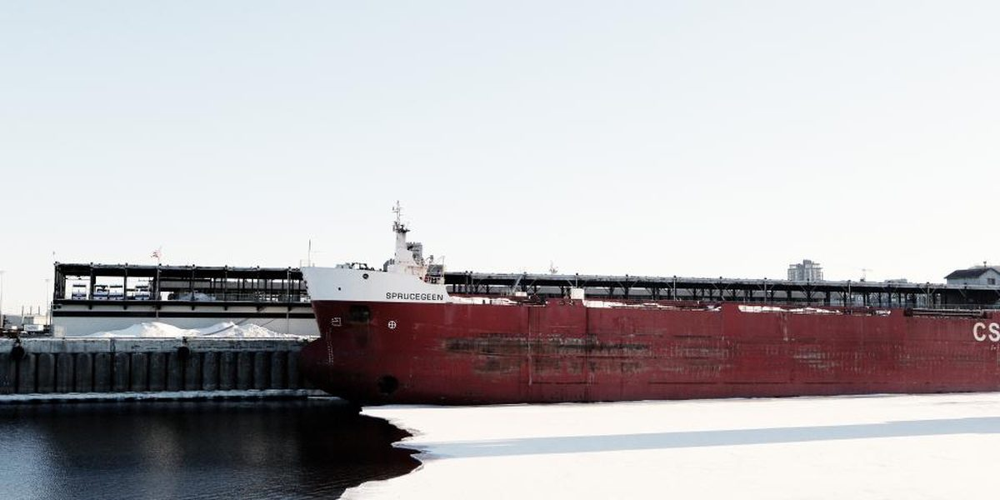

Havenwijk Logistiek
Logistik · Rotterdam, Niederlande · Gegründet 2003 · 96 Beschäftigte · 42.000 Quadratmeter Lagerfläche, 28 Zugmaschinen

Lagerung, Kommissionierung und Verteilung rund um den Rotterdamer Hafen; holt Container von Importeuren am Terminal ab, bringt sie ins Lager und liefert die Ware an Empfänger in den Niederlanden, in Belgien und in Westdeutschland. 96 Beschäftigte, 42.000 Quadratmeter Lager und 28 Zugmaschinen.
Team
- Pieter van DoornGeschäftsführer
- Marloes HendriksenLeiterin Betrieb
- Ruben SmeetsLeiter Finanzen
- Femke de WildeLeiterin Kunden und Verträge